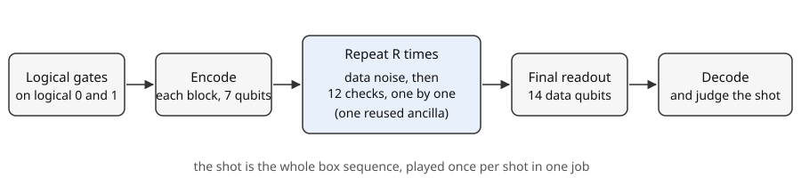
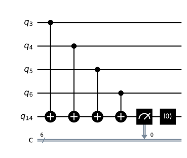
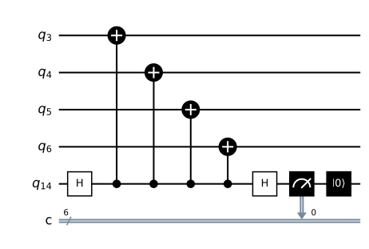

Part 2 · Time and noise · Chapter 4 · 6 min read
Checking again and again: rounds and the grid
Errors keep arriving, so the checks run again and again. You will be able to read the grid, one row per round and one column per check, and explain why 15 qubits are enough.
One round is twelve checks
The simulator protects two logical qubits, each in its own Steane block of seven data qubits: block A on qubits 0 to 6, block B on qubits 7 to 13. Chapter 3 gave each block three Z checks and three X checks, one per face of the triangle. That is six checks per block and twelve in all. Running each of them once is a round.

A shot is built in a fixed order. The logical gates you chose act first, then each logical qubit is encoded into its block. After encoding, noise starts. Each round first lets noise hit the 14 data qubits, then measures the twelve checks one after another: block A Z1 to Z3, then X1 to X3, then block B in the same order. After the last round the 14 data qubits themselves are measured. You pick 1 to 5 rounds; the default is 3.
One round is not enough because errors do not stop. A flip that arrives after the first round is invisible to it. Repeating the checks adds time as a second dimension: if an answer changes between rounds, something happened in between.
One ancilla, measured and reset after every check
Reading a check by measuring the data qubits would destroy the encoded state. The circuit instead uses an ancilla. For a Z check it copies the parity of the four data qubits in the face onto the ancilla with four controlled-NOT gates. For an X check it applies Hadamard gates to the ancilla and reverses the direction of the four gates. Then it measures the ancilla alone. The data qubits are touched but never read.

_Builder.check.
Twelve checks with a fresh ancilla each would need 14 + 12 = 26 qubits, more than the 24-qubit simulator can hold. So one ancilla is measured and then reset to 0 after every check, and the next check reuses it.
In words: fourteen data qubits plus one shared ancilla, however many rounds you run. The price is that the hardware must measure in the middle of a circuit and reset the qubit, which this project has verified only on the built-in Qiskit simulator, so it refuses IonQ backends for now (chapter 12).
The grid: space on one axis, time on the other
Every check answer is one bit, 1 if the check fired. The grid lays those bits out: columns are checks, rows are rounds, and a lit cell is a check that read 1. Orange cells are Z checks, blue cells are X checks. Under the grid, the triangle of each block mirrors the latest row: a face is filled when its Z check fired and outlined in blue when its X check fired. The vertices stay empty until the end, when the data qubits are read and a filled vertex means the qubit read 1.
- Z check fired
- X check fired
| Round | Z1 | Z2 | Z3 | X1 | X2 | X3 |
|---|---|---|---|---|---|---|
| 1 | 0 | 0 | 0 | 0 | 0 | 0 |
| 2 | 1 | 0 | 1 | 0 | 0 | 0 |
| 3 | 1 | 0 | 1 | 0 | 0 | 0 |
Rounds are also where noise gets its chance. In the simulator the noise models of chapter 6 hit the data qubits once before every round and once more before the final readout, so more rounds mean more chances for an error, and more rows in which to see it. Measuring itself can fail too: a check can be read wrongly even when the data are fine, which chapter 5 turns into a pattern you can recognise.
The figure shows block A only. In the simulator the grid has twelve columns, block A then block B, and each shot is played row by row so you can watch time pass.
Why it matters here
A flip that stays lit in every later row does not say when it happened. The next chapter shows how to turn the grid into something that does.
Try it in the simulator
First set p to 0 and press Run: the grid stays dark, because without noise every check reads 0. Then set p to 0.03 and run again. Look for orange cells that stay lit in every row below their first appearance: those are flips that arrived earlier and have not gone away.
Open with p = 0 Open with p = 0.03Check yourself
Why are 15 qubits enough for 12 checks?
One ancilla is measured and reset after every check and reused for the next, so the circuit needs 14 data qubits plus 1.
How many cells does a 4-round shot have?
Four rounds of 12 checks: 48 cells, 24 per block.
Sources
- A. G. Fowler, M. Mariantoni, J. M. Martinis, A. N. Cleland (2012). Surface codes: Towards practical large-scale quantum computation. Physical Review A 86, 032324. doi.org/10.1103/PhysRevA.86.032324
Supports: repeating rounds of syndrome measurement in time. - E. Dennis, A. Kitaev, A. Landahl, J. Preskill (2002). Topological quantum memory. Journal of Mathematical Physics 43, 4452. doi.org/10.1063/1.1499754
Supports: treating repeated rounds as a space-time problem. - Qiskit documentation.
BasicSimulator, which limits statevector simulation to 24 qubits. quantum.cloud.ibm.com/docs/en/api/qiskit/qiskit.providers.basic_provider.BasicSimulator
Supports: the 24-qubit statevector limit used in the qubit count.